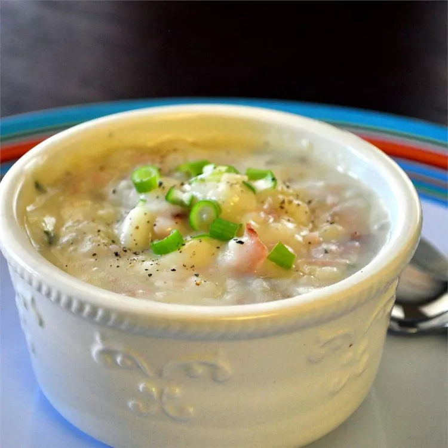

Description
This is a thick, hearty, golden potato soup. Kids love this recipe because of its cheesy flavor.
Ingredients (5 servings)
- 3 cups peeled and cubed potatoes
- 1 cup water
- 1/2 cup chopped celery
- 1/2 cup chopped onion
- 1 cube chicken bouillon
- 1 teaspoon dried parsley
- 1/2 teaspoon salt
- 1 pinch ground black pepper
- 1 1/2 cups milk
- 2 teaspoons all-purpose flour
- 1 1/2 cups shredded American cheese
- 1 cup chopped ham
Steps
- Place potatoes, water, celery, onion, chicken bouillon, parsley, salt, and black pepper into a large stockpot over medium heat; simmer until potatoes and celery become tender.
- Whisk milk and flour together in a small bowl until well blended; stir into soup and cook until thickened.
- Stir in cheese and ham until incorporated; simmer until cheese is melted.
Home